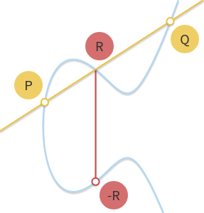

Elliptic Curve Cryptography¶
原文：
- Elliptic curves over real numbers and the group law
- Elliptic Curve Cryptography: finite fields and discrete logarithms
- Key pair generation and two ECC algorithms: ECDH and ECDSA
实数域上的椭圆曲线与群¶
椭圆曲线（Elliptic Curves）¶
首先，什么是椭圆曲线，简单来说，椭圆曲线就是满足以下公式的点的集合：
其中 \(4a^3 + 27b^2 \ne 0\) （排除掉奇异曲线 singular curves）。
不同形状的椭圆曲线，\(b = 1\), \(a\) 从 2 到 -3。
a 和 b 的值不一样，曲线在平面上的形状也不一样。显而易见并且容易证明的是：椭圆曲线都是相对于 x 轴对称的。
另外，我们定义无穷远点（point at infinity）为椭圆曲线上的一点，这个点我们用符号 \(0\) 来表示。
加上无穷远点，完善后的椭圆曲线公式如下：
群（Groups）¶
在数学中，群是一个集合 \(\mathbb{G}\) ，连同其上定义的二元运算 加 （使用符号 + 表示）。要具备成为群的资格，这个集合和运算 \((\mathbb{G}, +)\) 还必须满足叫做群公理的四个要求：
- 封闭性（closure）：对于所有 \(\mathbb{G}\) 中 a, b，运算 a + b 的结果也在 \(\mathbb{G}\) 中。
- 结合性（associativity）：对于所有 \(\mathbb{G}\) 中的 a, b 和 c，等式 (a + b) + c = a + (b + c) 成立。
- 单位元（identity element）：存在 \(\mathbb{G}\) 中的一个元素 \(0\)，使得对于所有 \(\mathbb{G}\) 中的元素 a，等式 \(a + 0 = 0 + a = a\) 成立。
- 逆元（inverse）：对于每个 \(\mathbb{G}\) 中的 a，存在 \(\mathbb{G}\) 中的一个元素 b 使得 \(a + b = 0\)。
如果再加上第 5 个条件：
- 交换性（commutativity）: a + b = b + a 。
那么这个群又叫做阿贝尔群（abelian group）。
整数集合 \(\mathbb{Z}\) 连同我们日常使用的整数加法构成一个群（还是一个阿贝尔群）。自然数集合 \(\mathbb{N}\) 不是群，因为不满足第 4 个要求。
在以上特性成立的基础上，我们可以继续推导出群的一些其它特性，比如：单位元是唯一的，并且逆元也是唯一的，也就是说：对于任意 a，只存在唯一的 b 使得 a + b = 0（我们可以将 b 写做 -a）。这些特性在后文中会直接或间接的派上重要用场。
在椭圆曲线上定义一个群（The group law for elliptic curves）¶
我们可以如下定义一个椭圆曲线上的群：
- 群里的元素为曲线上的点。
- 单位元 为无穷远点 \(0\)。
- 曲线上任意一点 \(P\) 的 逆元 是其相对于 x 轴的对称点。
- 加 法规定如下：曲线上任意的 3 点 \(P\)，\(Q\)，\(R\)，如果 3 点在一条直线上（aligned）并且都不是无穷远点（nonzero），那么它们的和 \(P + Q + R = 0\) 。

注意最后一条规则，我们只要求 3 个点在一条直线上，并不要求其顺序，也就是说 \(P + (Q + R) = Q + (P + R) = R + (P + Q) = \cdots = 0\)，因此定义的加法满足结合性和交换性，也就是说这是一个阿贝尔群。
那么，我们如何计算任意两点相加的和呢？
几何加法（Geometric addition）¶
上面定义的群是一个阿贝尔群，所以我们可以将 \(P + Q + R = 0\) 改写成 \(P + Q = -R\) 。从后面这个公式我们可以得出计算任意两点 \(P\) 和 \(Q\) 相加和的几何方法：过 \(P\) 和 \(Q\) 两点画一条直线，这条直线交曲线上第三点 \(R\)，取其逆元 \(-R\) 即是 \(P + Q\) 的结果。
上面的几何计算方法可以工作但还需要几点补充，尤其是下面几个问题需要解决：
如果 \(P = 0\) 或者 \(Q = 0\) 怎么办？ 此时无法画一条过两点的直线，但是前面我们已经定义了 \(0\) 为单位元，所以 \(P + 0 = P\) ，\(0 + Q = Q\) 。
如果 \(P = -Q\) 呢？ 此时过两点的直线是垂直的，和曲线没有第三个交点。但是因为 \(P\) 是 \(Q\) 的逆元，根据逆元的定义： \(P + Q = P + (-P) = 0\) 。
如果 \(P = Q\) 呢？ 过一点有无数条直线，这里问题变得有点复杂了。考虑曲线上的一点 \(Q' \ne P\) ，如果我们让 \(Q'\) 不断逼近 \(P\)，此时过 \(P\) 和 \(Q'\) 的直线就变成了曲线的切线。基于此，我们可以定义 \(P + P = -R\) ，这里 \(R\) 是曲线在 \(P\) 点的切线与曲线的另外一个交点。

如果 \(P \ne Q\)，但是没有第三个交点 \(R\) 呢？ 这个和前面一个问题的情况类似，此时过 \(P\) 和 \(Q\) 的直线是曲线的切线。

假设 \(P\) 是切点，那么 \(P + P = -Q\)，所以 \(P + Q = -P\)，同理，如果 \(Q\) 是切点，\(P + Q = -Q\) 。
以上就是几何加法的完整步骤，使用笔和尺子我们就可以完成椭圆曲线上任意两点的加法（或者可以使用这个 可视化工具 ）。
代数加法（Algebraic addition）¶
为了使用计算机来计算椭圆曲线上点的加法，我们需要将上面的几何方法转换为代数方法。将上面的规则转化为公式涉及到解三次方程，比较繁琐，所以这里我们省略过程直接给出结果。
首先，我们先去掉一些极限情况，我们知道 \(P + (-P) = 0\)，也知道 \(P + 0 = 0 + P = P\)，所以下面的公式中我们排除这两种情况，只考虑 \(P = (x_P, y_p)\) 和 \(Q = (x_Q, y_Q)\) 为非对称点、非无穷远点的情况。
因为 \(P\) 和 \(Q\) 非对称（\(x_P \ne x_Q\)），所以过两点的直线有斜率（slope），斜率为：
设直线与椭圆曲线的第三个交点为 \(R = (x_R, y_R)\)，则：
或者：
我们使用一个例子来验证以下以上公式的正确性：根据我们的 可视化工具 ，给定曲线 \(y^2 = x^3 - 7x + 10\) ，\(P = (1, 2)\) 和 \(Q = (3, 4)\) ，两点的和 \(P + Q = -R = (-3, 2)\) 。我们来看下和我们上面的公式计算的结果是否吻合：
结果一致！
即使 \(P\) 或者 \(Q\) 中的一点是切点，上面的公式依然可以得出正确的结果。例如： \(P = (-1, 4)\) 和 \(Q = (1, 2)\) 。
结果 \(P + Q = (1, -2)\) ，和 可视化工具 给出的一样。
\(P = Q\) 的情况需要特殊处理： 计算 \(x_R\) 和 \(y_R\) 的公式不变，但是斜率的公式需要修改使用以下公式（因为 \(x_P = x_Q\)）：
此时，斜率 m 是下面这个公式的一阶导数：
使用 \(P = Q = (1, 2)\) 验证一下：
结果： \(P + P = -R = (-1,-4)\) ，正确 ！
乘法（Scalar multiplication）¶
除了加法之外，我们可以再定义一个运算：乘法。
这里，\(n\) 是一个自然数。 乘法可视化计算工具 。
从乘法定义来看，计算 \(nP\) 需要进行 \(n\) 次加法运算。假如 \(n\) 为 \(k\) bit，则计算复杂度为： \(O(2^k)\) ，性能不好，还好乘法存在不少快速算法。
double and add 就是其中算法之一。这个算法的原理可以用一个例子来解释清楚。令 \(n = 151\) ，它的二进制表达形式为： \(10010111_2\) ，这个二进制形式可以进一步用一系列 2的幂(powers of two) 的和来表示：
因此 \(151 \cdot P\) 可以写成：
最后，double and add 算法的计算步骤如下：
- 取 \(P\) 。
- 计算（Double） \(2P = P + P\) 。
- 将 \(2P\) 和 \(P\) 相加得到 \(2^1P + 2^0P\) 的结果。
- 计算 \(2^2P = 2P + 2P\) 。
- 将 \(2^2P\) 和前面的结果相加得到 \(2^2P + 2^1P + 2^0P\) 的结果。
- 计算 \(2^3P = 2^2P + 2^2P\) 。
- 计算 \(2^4P = 2^3P + 2^3P\) 。
- 将 \(2^4P\) 和前面的结果相加得到 \(2^4P + 2^2P + 21^P + 2^0P\) 的结果。
- ……
最终我们通过 7 次 Double 和 4 次加运算就得到了 \(151 \cdot P\) 的结果。
如果上面的描述不够清晰，下面是该算法的 Python 代码实现：
def bits(n):
"""
Generates the binary digits of n, starting
from the least significant bit.
bits(151) -> 1, 1, 1, 0, 1, 0, 0, 1
"""
while n:
yield n & 1
n >>= 1
def double_and_add(n, x):
"""
Returns the result of n * x, computed using
the double and add algorithm.
"""
result = 0
addend = x
for bit in bits(n):
if bit == 1:
result += addend
addend *= 2
return result
如果 Double 和加法的复杂度是 \(O(1)\) ，那么本算法的复杂度就是 \(O(\log n)\) （或者用 n 的 bit 长度表示的话： \(O(k)\) ），性能很不错，比一开始 \(O(n)\) 的复杂度好多了。
对数（Logarithm）¶
给定 \(n\) 和 \(P\) ，我们有了一个算法可以在多项式时间内计算得到 \(Q = nP\) 。那么反过来，如果我们知道 \(Q\) 和 \(P\) 需要计算出 \(n\) 呢？这个问题被称作 对数问题 ，称其为“对数”而不是“除”主要是为了和其它加密系统一致（这些系统里乘法对应的是幂 exponentiation）。
对数问题目前没有比较高效（easy）的解决算法，当然通过 摸索 我们也能看到一些模式（pattern）。比如，曲线 \(y^2 = x^3 - 3x +1\) 和点 \(P = (0, 1)\) ，可以看到，当 \(n\) 是奇数时，\(nP\) 总是落在左边的曲线上，当 \(n\) 是偶数时，\(nP\) 落在右边的曲线上。通过不断的实验，我们也许可以发现更多的模式，这些模式可能最终可以帮我们找到一个解决对数问题的高效算法。
但是，对数问题中有一类 离散 对数问题，我们将在下文中看到，当我们缩小曲线的值域， 曲线上的乘法还是可以高效运算，但是其逆运算，也就是离散对数运算变得非常的困难（hard）。这种不对称（duality）即椭圆曲线加密的核心。
有限域与离散对数问题¶
“整数对 p 取模“有限域（The field of integers modulo p）¶
有限域是什么？首先，它是一个包含有限个元素的集合。有限域最常见的例子是当 p 为素数时，整数对 p 取模，一般使用 \(\mathbb{Z}/p\), \(GF(p)\) 或者 \(\mathbb{F}_p\) 表示，下文中我们使用最后一种表示这个有限域。
有限域上定义了加法（+）和乘法（·）两种运算，运算满足封闭性、结合性和交换性。存在唯一的单位元（identity element），域中的每个元素存在唯一的逆元（inverse element）。最后，乘法对加法满足分配律（distributive）： \(x \cdot (y + z) = x \cdot y + x \cdot z\) 。
整数对 p 取模有限域中包含了从 \(0\) 到 \(p - 1\) 的所有整数，加法和乘法同 模运算（modular arithmetic） ，下面是 \(\mathbb{F}_{23}\) 的运算示例：
加： \((18 + 9) \bmod 23 = 4\)
减： \((7 - 14) \bmod 23 = 16\)
乘： \((4 \cdot 7) \bmod 23 = 5\)
加法逆元（Additive inverse）： \(-5 \bmod 23 = 18\)
\((5 + (-5)) \bmod 23 = (5 + 18) \bmod 23 = 0\) ，正确。
乘法逆元（Multiplicative inverse）： \(9^{-1} \bmod 23 = 18\)
\(9 \cdot 9^{-1} \bmod 23 = 9 \cdot 18 \bmod 23 = 1\) ，正确。
如果上面的公式看不太明白，可以看下可汗学院的这个教程： What is Modular Arithmetic 。
注意： \(p\) 必须是一个素数。比如整数对 4 取模构成的集合就不是一个域：因为集合里的元素 2 没有乘法逆元，也就是说 \(2 \cdot x \bmod 4 = 1\) 无解。
模除(Division modulo p)¶
在 \(\mathbb{F}_p\) 中 \(x/y = x \cdot y^{-1}\) ，也就是说，\(x\) 除 \(y\) 等价于 \(x\) 乘上 \(y\) 的乘法逆元。
乘法逆元可以使用 扩展欧几里得算法（extended Euclidean algorithm） 很容易的计算得出，复杂度最差为 \(O(\log p)\)，用 p 的 bit 长度表示的话为 \(O(k)\) 。
这个算法的细节跟本文主题无关，这里就不展开叙述了，下面是这个算法的 Python 语言实现，有兴趣的可以看看：
def extended_euclidean_algorithm(a, b):
"""
Returns a three-tuple (gcd, x, y) such that
a * x + b * y == gcd, where gcd is the greatest
common divisor of a and b.
This function implements the extended Euclidean
algorithm and runs in O(log b) in the worst case.
"""
s, old_s = 0, 1
t, old_t = 1, 0
r, old_r = b, a
while r != 0:
quotient = old_r // r
old_r, r = r, old_r - quotient * r
old_s, s = s, old_s - quotient * s
old_t, t = t, old_t - quotient * t
return old_r, old_s, old_t
def inverse_of(n, p):
"""
Returns the multiplicative inverse of
n modulo p.
This function returns an integer m such that
(n * m) % p == 1.
"""
gcd, x, y = extended_euclidean_algorithm(n, p)
assert (n * x + p * y) % p == gcd
if gcd != 1:
# Either n is 0, or p is not a prime number.
raise ValueError(
'{} has no multiplicative inverse '
'modulo {}'.format(n, p))
else:
return x % p
\(\mathbb{F}_p\) 上的椭圆曲线（Elliptic curves in \(\mathbb{F}_p\)）¶
下面我们将椭圆曲线限定在 \(\mathbb{F}_p\) 上，前文提到实数域上的椭圆曲线公式如下：
限定之后，公式变为：
其中 \(0\) 依然是无穷远点，\(a\) 和 \(b\) 是 \(\mathbb{F}_p\) 上的整数。

曲线 \(y^2 \equiv x^3 - 7x + 10 (\bmod p)\) ，\(p = 19, 97, 127, 487\) 。每一个 x 对应两个点，并相对于 \(y = p/2\) 对称。
之前连续的曲线现在变成了 \(xy\) 平面上的离散点。我们可以证明，限定之后， \(\mathbb{F}_p\) 上的椭圆曲线依然构成一个阿贝尔群。
曲线上点的加法（Point addition）¶
我们需要稍微修改一下加法的定义，让其在 \(\mathbb{F}_p\) 上可以正常工作。在实数域上，我们说三个在一条直线上的点的和为零（\(P + Q + R = 0\)）。在 \(\mathbb{F}_p\) 上同理，只是这里的直线和实数域上的直线不太一样。\(\mathbb{F}_p\) 上的直线指的是满足 \(ax + by + c \equiv 0 (\bmod p)\) 的所有点 \((x, y)\) 的集合。

曲线构成群，所以曲线上点的加法依然满足前面说的各种群特性。
- \(Q + 0 = 0 + Q = Q\) (根据单位元的定义）。
- 非无穷元点 \(Q\) 的逆元 \(-Q = (x_Q, -y_Q \bmod p)\) 。比如， \(\mathbb{F}_{29}\) 上的曲线上有一个点 \(Q = (2,5)\) ，那么其逆元 \(-Q = (2, -5 \bmod 29) = (2,24)\) 。
- \(P + (-P) = 0\) （根据逆元的定义）。
代数加法（Algebraic sum）¶
公式和前面实数域上的代数加法一样，只是每个公式的最后需要追加一个“\(\bmod p\)”。给定 \(P = (x_P, y_P)\), \(Q = (x_Q, y_Q)\) 和 \(R = (x_R, y_R)\) ，我们如下计算 \(P + Q = -R\) ：
如果 \(P \ne Q\)，斜率 \(m\) 为：
否则：
椭圆曲线群的序（The order of an elliptic curve group）¶
有限域上的椭圆曲线群的集合中包含有限个数的点，这些点的个数称为该群的序（order）。
我们可以从 \(0\) 到 \(p - 1\) 遍历 \(x\) 的所有可能值来计算得到点的个数，计算复杂度为 \(O(p)\) ，如果 \(p\) 非常大的话，性能会很低下。
还好，存在高效算法 Schoof’s algorithm 可以快速计算一个群的序。具体细节我们可以不用关注，只需要知道其可以多项式时间内计算完成就行。
乘法和循环子群（Scalar multiplication and cyclic subgroups）¶
有限域上的乘法和实数域上一样，还是：
我们依然可以使用 double and add 算法来高效完成乘法运算。
\(\mathbb{F}_p\) 上的椭圆曲线上的点的乘法有一个非常有意思的特性。以曲线 \(y^2 \equiv x^3 + 2x + 3 (\bmod 97)\) 和点 \(P = (3, 6)\) 为例：

- \(0P = 0\)
- \(1P = (3, 6)\)
- \(2P = (80, 10)\)
- \(3P = (80, 87)\)
- \(4P = (3, 91)\)
- \(5P = 0\)
- \(6P = (3, 6)\)
- \(7P = (80, 10)\)
- \(8P = (80, 87)\)
- \(9P = (3, 91)\)
- ……
首先，\(nP\) 所有可能的值只有 5 个。第二，这些值循环出现。所以，对于所有的整数 \(k\) ：
- \(5kP = 0\)
- \((5k + 1)P = P\)
- \((5k + 2)P = 2P\)
- \((5k + 3)P = 3P\)
- \((5k + 4)P = 4P\)
使用取模运算我们可以将上面 5 个公式进一步简化为： \(kP = (k \bmod 5)P\) 。
不仅如此，我们还可以证明这 5 个点的加法是封闭的。也就是说 \(0\) 、\(P\)、\(2P\)、\(3P\)、\(4P\) 任意相加，最终的结果还是这 5 个点之一。
以上规律并不限于 \(P = (3, 6)\) 这个点，而是对曲线上所有的点都成立。假设 \(P\) 是曲线上任意一点：
也就是说：两个 \(P\) 的倍乘数相加，它们的和还是 \(P\) 的倍乘数。也就证明了 \(nP\) 的可能值构成的集合是一个椭圆曲线的循环子群。
通过点 \(P\) 我们可以获得这个循环子群里的所有元素，所以 \(P\) 又被称为这个循环子群的 生成元（generator） 或者 基点（base point） 。
循环子群是椭圆曲线加密以及其它一些加密系统的基石。
子群的序（Subgroup order）¶
Schoof’s algorithm 只能计算椭圆曲线群的序，不能用于计算点 \(P\) 生成的子群的序，那么这个子群的序怎么来计算呢？
在解决这个问题之前，我们先做一点铺垫：
- 前面，我们定义一个群的序为这个群里元素的个数。不过对于循环子群，我们可以给出另外一个等价的定义：\(P\) 的序为满足 \(nP = 0\) 的最小正整数 \(n\) 。例如前面包含 5 个点的子群，我们可以看到 \(5P = 0\) 。
- 根据 拉格朗日定理（Lagrange’s theorem） ，子群的序是其父群的一个约数（divisor）。也就是说，如果椭圆曲线群的序为 \(N\)，子群的序为 \(n\)，那么 \(n\) 是 \(N\) 的一个约数。
综上，我们可以得到如下计算子群的序的算法：
- 使用 Schoof’s algorithm 计算得到椭圆曲线群的序 \(N\)。
- 找出 \(N\) 的所有约数。
- 对于 \(N\) 的每一个约数 \(n\)，计算 \(nP\) 。
- 满足 \(nP = 0\) 的最小 \(n\) ，就是基点为 \(P\) 的子群的序。
例如，\(\mathbb{F}_{37}\) 上的椭圆曲线群 \(y^2 = x^3 - x + 3\) 的序为 \(N = 42\)。那么它的子群的序可能是 \(n =\) 1, 2, 3, 6, 7, 14, 21 或者 42。对于点 \(P = (2, 3)\)，我们可以计算得到 \(P \ne 0\)，\(2P \ne 0\)，……，\(7P = 0\)，所以，\(P\) 的序为 \(n = 7\) 。
另外一个例子：\(\mathbb{F}_{29}\) 上的椭圆曲线群 \(y^2 = x^3 - x + 3\) 的序为 \(N = 37\)，是一个素数，所以它的子群的序 \(n\) 只能为 1 或者 37。当 \(n = 1\) 时，子群里只有无穷远点，当 \(n = N\) 时，子群包含了椭圆曲线群里的所有点。
寻找基点（Finding a base point）¶
对于椭圆曲线加密算法，我们需要一个序比较高的子群。具体来说，我们需要选择一个椭圆曲线，计算它的序 \(N\)，选择 \(N\) 的一个比较大的约数作为子群的序 \(n\)，最后找到这个序对应的基点。这里我们不是先选基点再计算它的序，而是反过来：先选定序再寻找其对应的基点。那么在知道序的情况下如何找到其对应的基点呢？
我们需要再引入一个概念。根据拉格朗日定理可知 \(h = N/n\) 必然是一个整数 （\(n\) 是 \(N\) 的约数）。这个 \(h\) 叫做 子群的 cofactor 。
对于椭圆曲线上的任意点，都有 \(NP = 0\)，因为 \(N\) 是所以 \(n\) 的公倍数，根据 cofactor 的定义，我们可以得到：
假设 \(n\) 是一个素数（具体理由后面会解释）。从上面的公式我们可以知道：点 \(G = hP\) 生成一个序为 \(n\) 的子群（除非 \(G = hP = 0\)，它生成的群的序为 1）。
据此，我们得到以下算法：
- 计算椭圆曲线的序 \(N\) 。
- 选择子群的序 \(n\)， \(n\) 是素数并且是 \(N\) 的约数。
- 计算 cofactor \(h = N/n\)。
- 取曲线上随机一点 \(P\) 。
- 计算 \(G = hP\) 。
- 如果 \(G\) 是 \(0\)，回第 4 步，否则 \(G\) 就是我们要找的基点（序为 \(n\)，cofactor 为 \(h\) ）。
注意，算法可以工作的前提是 \(n\) 是一个素数，如果不是，\(G\) 的序可能是 \(n\) 的一个约数。
离散对数（Discrete logarithm）¶
如果知道 \(P\) 和 \(Q\)，如何找到 \(k\) 使得 \(Q = kP\) 呢？
这个问题前面已经说了，叫做 离散对数问题 。到目前为止，还没有一个算法可以在多项式时间内解决。
这个问题同 DSA 算法、 Diffie-Hellman (D-H) 密钥交换以及 ElGamal 算法中使用的离散对数问题类似，区别只在于这些算法使用的是幂次而不是乘法运算，这些算法中的离散对数问题是这样的：如果知道 \(a\) 和 \(b\)，如何找到 \(k\) 使得 \(b = a^k \bmod p\) 。
因为这些问题都是限定在有限域上的，所以它们是“离散”的，因为它们和普通的对数运算类似，所以叫做对数问题。
椭圆曲线有意思的地方在于：比起其它的加密算法，它的离散对数问题似乎更难解决。这意味着我们可以使用较少 bit 的 \(k\) 就获得和其它加密系统同样的安全等级。
椭圆曲线加密：ECDH 和 ECDSA¶
椭圆曲线参数（Domain parameters）¶
椭圆曲线加密算法工作在 有限域上的椭圆曲线 的循环子群上，曲线的参数可以用一个六元组 \((p, a, b, G, n, h)\) 表示：
- 素数 \(p\) 指定有限域的大小。
- 椭圆曲线的系数 \(a\) 和 \(b\) 。
- 子群的 基点 \(G\) 。
- 子群的 序 \(n\) 。
- 子群的 cofactor \(h\) 。
椭圆曲线加密（Elliptic Curve Cryptography）¶
椭圆曲线的核心原理如下：
- 私钥（private key） 是从 \({1, \cdots, n - 1}\) 中随机选择的一个数 \(d\) （\(n\) 是子群的序）。
- 公钥 是点 \(H = dG\) （\(G\) 是子群的基点）。
根据循环子群的特性，知道 \(d\) 和 \(G\) 可以很容易的计算得到 \(H\)，相反，知道 \(H\) 和 \(G\) 想要得到私钥 \(d\) 非常的困难，因为这是一个离散对数问题。
椭圆曲线常用的有以下两个算法：用于加密的 ECDH (Elliptic curve Diffie-Hellman) 算法，用于计算数字签名的 ECDSA (Elliptic Curve Digital Signature Algorithm) 算法。
ECDH 加密算法¶
ECDH 是 Diffie-Hellman 算法 的一个变种，它本质上是 密钥协商算法 ，只负责通信双方密钥的生成和交换，如何使用这个密钥加密数据取决于用户，和 ECDH 算法无关。
假设 Alice 和 Bob 想要交换信息，下面是使用 ECDH 交换密钥的过程：
- 首先，Alice 和 Bob 各自生成自己的公钥和私钥。设 Alice 的私钥为 \(d_A\) ，公钥 \(H_A = d_AG\)，Bob 的私钥 \(d_B\)，公钥 \(H_B = d_BG\) 。两人使用同样的曲线参数。
- Alice 和 Bob 在不可靠的信道上交换它们的公钥。中间人即使监听获得了两人的公钥 \(H_A\) 和 \(H_B\) ，也没办法解出两人的私钥 \(d_A\) 或 \(d_B\) ，因为需要解离散对数问题。
- Alice 计算 \(S = d_AH_B\) （使用自己的私钥和 Bob 的公钥），Bob 计算 \(S = d_BH_A\) （使用自己的私钥和 Alice 的公钥）。这个 \(S\) 是两人之间“共同的秘密（shared secret）”。
通过公钥 \(H_A\) 和 \(H_B\) 很难解出 \(S\) 来，这个叫做 Diffie-Hellman 难题。即：
给定三个点 \(P\)， \(aP\) 和 \(bP\)，求 \(abP\) 。
或者等价的（原始 Diffie-Hellman 算法里用的）：
给定三个整数 \(k\)， \(k^x\) 和 \(k^y\)，求 \(k^{xy}\) 。
Diffie-Hellman 难题更详细的可以参见可汗学院的这个视频： Public key cryptography - Diffie-Hellman Key Exchange (full version)
解决椭圆曲线的 Diffie-Hellman 难题需要解决离散对数难题，所以很难求解。
Alice 和 Bob 获得共同的秘密 \(S\) 后，就可以使用对称加密来交换数据了。
比如，可以使用 \(S\) 的 \(x\) 坐标作为密钥，使用 AES 或者 3DES 之类的算法来加密信息。TLS 的方式比这个稍微复杂一点，它用的是 \(x\) 坐标再加上一些和连接相关的数值后计算的一个 hash。
ECDHE 加密算法¶
ECDHE 指的是 Ephemeral（临时的） ECDH 算法，也就是说 ECDH 加密算法交换的密钥只是临时的，不是 静态 的。
比如 TLS 就使用了 ECDHE 算法，客户端和服务端每次建立连接的时候都会生成并交换新的公私钥。
ECDSA 签名算法（Signing with ECDSA）¶
ECDSA 签名算法的使用场景是这样的：Alice 要发送一个消息给 Bob，为了让 Bob 相信这个信息确实是她发出的， Alice 使用自己的私钥 \(d_A\) 给消息生成一个数字签名并和消息一起发给 Bob，Bob 收到后可以使用 Alice 的公钥 \(H_A\) 验证这个消息是否确实是 Alice 所发。
这里两人依然使用同样的椭圆曲线参数。ECDSA 是 Digital Signature Algorithm 在椭圆曲线上的应用。
ECDSA 是用消息的 hash 来生成签名的，这个 hash 函数我们可以自己定（但最好使用一个 安全 hash 算法 。hash 值会被截断到和子群的序 \(n\) 同样的 bit 长度。记这个截断后的整数值为 \(z\) 。
ECDSA 算法签名的过程如下：
- 从 \({1, \cdots, n - 1}\) 随机取一个数 \(k\) （\(n\) 是子群的序）。
- 计算点 \(P = kG\) （\(G\) 是子群的基点）。
- 计算 \(r = x_P \bmod n\) （\(x_P\) 是 \(P\) 点的 \(x\) 坐标）。
- 如果 \(r = 0\) 换一个 \(k\) 后重试。
- 计算 \(s = k^{-1}(z + rd_A) \bmod n\) （其中 \(d_A\) 是 Alice 的私钥， \(k^{-1}\) 是 \(k\) 的乘法逆元。
- 如果 \(s = 0\)，换一个 \(k\) 后重试。
\((r, s)\) 对就是生成的数字签名。

简言之，这个算法生成一个密钥 \(k\) ，然后使用点的乘法将其藏入 \(r\) 中（乘法容易，反过来就是对数问题，求解很困难），最后使用公式 \(s = k^{-1}(z + rd_A) \bmod n\) 将 \(r\) 和消息的 hash \(z\) 绑定。
验证签名（Verifying signatures）¶
Bob 收到消息后，同 Alice 计算签名时算消息的 hash 的方法一样计算收到的消息的 hash 值 \(z\) 。然后：
- 计算 \(u_1 = s^{-1}z \bmod n\) 。
- 计算 \(u_2 = s^{-1}r \bmod n\) 。
- 计算点 \(P = u_1G + u_2H_A\) 。
如果 \(r = x_P \bmod n\) ，那么说明这条消息确实是 Alice 所发。
算法证明（Correctness of the algorithm）¶
根据公钥定义 \(H_A = d_AG\) （\(d_A\) 是私钥），我们可以得到：
根据上面 \(u_1\) 和 \(u_2\) 点定义：
为了简洁，上面的公式都省略了“ \(\bmod n\)”。
又： \(s = k^{-1}(z + rd_A) \bmod n\) ，两边乘上 \(k\) 再除 \(s\) 得到： \(k = s^{-1}(z + rd_A) \bmod n\) 。将上面 \(P\) 公式里的 \(s^{-1}(z + rd_A)\) 替换为 \(k\) 得到：
这个公式和生成签名第 2 步里的公式一模一样，也就是生成和验证的时候我们可以计算得到相同的点 \(P\)。证明完毕。
ECDSA 使用的密钥 \(k\) 应该不可预测，如果我们所有的签名使用同样的 \(k\) 或者使用的随机数生成器可预测，攻击者可以有办法破解得到私钥。
Algorithms for breaking ECC security, and a comparison with RSA¶
http://andrea.corbellini.name/2015/05/17/elliptic-curve-cryptography-a-gentle-introduction/